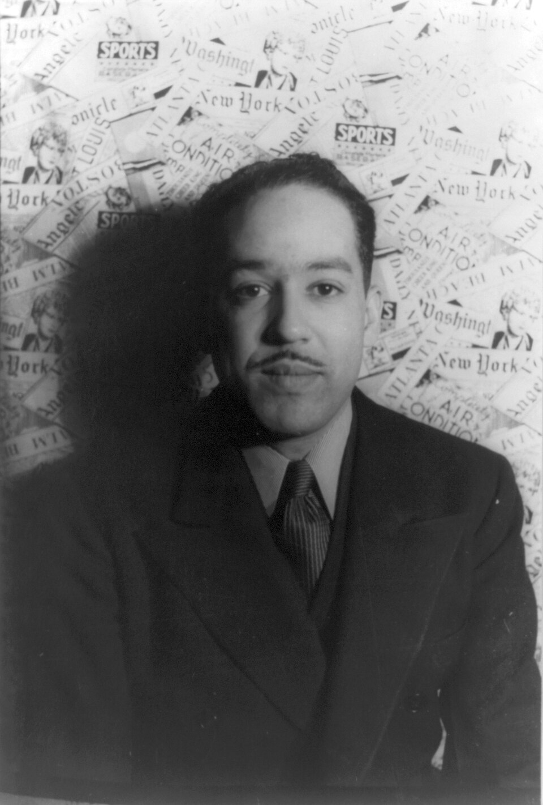
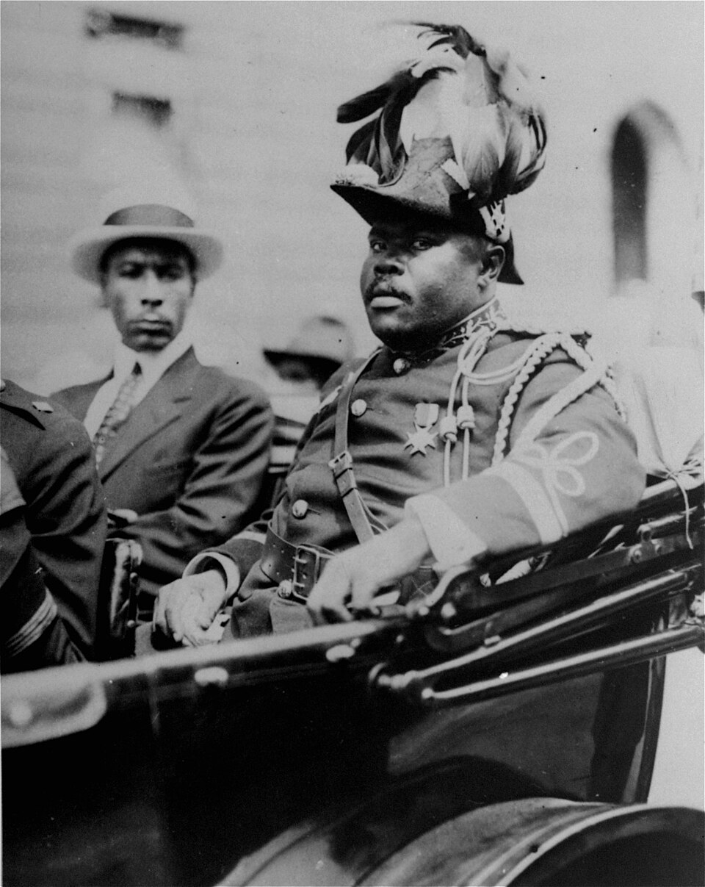

Directions: Five documents tell the story of the Great Migration from five positions: a newspaper calling people north, a woman preparing to leave, a report on the city that received her, a poem, and a speech. Your group studies one station closely, answers its questions, and teaches the document to the class. Then, in Part 2, assemble one account of the migration from all five documents, keeping three things separate: what pushed people out, what pulled them north, and what they built when they arrived.
Source: Passages from the Chicago Defender, 1917, quoted in Emmett J. Scott, Negro Migration During the War (Carnegie Endowment for International Peace, 1920). Cuts are marked with ellipses.
Have they stopped their Jim Crow cars? Can you buy a Pullman sleeper where you wish? Will they give you a square deal in court yet?
To die from the bite of frost is far more glorious than at the hands of a mob. I beg you, my brother, to leave the benighted land. You are a free man. ... For the hard-working man there is plenty of work. ... The Defender says come.
Scott adds that it was this paper that named the exodus the Great Northern Drive, set the date of May 15, 1917, and took responsibility for persuading southerners to leave. The sale of the paper was forbidden in several southern towns.
The first passage is three questions, not statements. What is the Defender asking its readers to notice about the South, and why is a question stronger here than a statement?
Sort this station's evidence. Which lines name a push, and which lines name a pull? Quote one of each.
Source: Letter to the Chicago Defender, April 24, 1917, printed in Emmett J. Scott, Negro Migration During the War (1920). The writer's name was not printed. Cuts are marked with ellipses.
April 24, 1917. Mr. R. S. Abbott, Editor, the Chicago Defender, Sir: I have been reading the Defender for one year or more, and last February I read about the great northern drive to take place May 15. ... My husband is in the North already working, and he wants us to come up in May, so I want to know if it is true about the excursion. I am getting ready and, oh, so many others also. ... So please answer at once. We are getting ready. Yours,
Trace the chain that produced this letter. What reached this writer first, what had already happened in her family, and what is she waiting for before she can move?
What does this letter show about how the migration actually moved: all at once, or household by household? Support your answer from the letter.
Source: Emmett J. Scott's summary of the 1917 report of the Chicago branch of the National League on Urban Conditions among Negroes (the Urban League), in Negro Migration During the War (1920). The sentences in this station are Scott's summary of the report.
The work which the league did for the migrants, as set forth in the report of 1917, was of three kinds: employment, housing and adjustment or assimilation. The policy of the Urban League with regard to employment was to find and, where possible, to open new occupations hitherto denied negroes.
The housing problem was urgent. A canvass of real estate dealers supplying houses for negroes, conducted by the Chicago Urban League, found on a single day 664 negro applicants for houses, and only 50 supplied. Rents rose from 6 to 30 per cent, and sometimes as high as 50 per cent. An agent met trains and directed migrants to relatives and friends, or to lodging, and to the league office for employment.
What three kinds of work did the league do for migrants, and what was its employment policy in its own terms?
Use the canvass numbers. What do 664 applicants and 50 supplied on a single day show about the city migrants arrived in, and how does that change a simple story of arrival?
Source: Langston Hughes, The Negro Speaks of Rivers, first published in The Crisis, June 1921. Text as reproduced in African American Poetry, a digital anthology edited at Lehigh University.

I've known rivers:
I've known rivers ancient as the world and older than the flow of human blood in human veins.
My soul has grown deep like the rivers.
I bathe in the Euphrates when dawns were young.
I built my hut near the Congo and it lulled me to sleep.
I looked upon the Nile and raised the pyramids above it.
I heard the singing of the Mississippi when Abe Lincoln went down to New Orleans, and I've seen its muddy bosom turn all golden in the sunset.
I've known rivers: Ancient, dusky rivers.
My soul has grown deep like the rivers.
The poem names four rivers. Place them in order and state what stretch of history the speaker claims as his own.
This poem was published in 1921, as the migration ran. What is it building, and how does building it answer a country that treated Black Americans as a people without a history?
Source: Marcus Garvey, speech to the delegates of the Universal Negro Improvement Association convention, Liberty Hall, New York, 1920, in Philosophy and Opinions of Marcus Garvey, edited by Amy Jacques Garvey (1923). Cuts are marked with ellipses.

We hear among Negroes the cry of "Africa for the Africans". This cry has become a positive, determined one. ... We have established this Liberty Hall as the centre from which we send out the sparks of liberty to the four corners of the globe. ... If you want Liberty you yourselves must strike the blow. If you must be free you must become so through your own effort, through your own initiative.
Garvey tells the delegates that freedom must come through their own effort. What is he rejecting, and what is he asking them to do instead?
Look at the photograph. The uniform, the medal, and the parade car are arguments, not decorations. What do they claim, and how does the claim connect to the speech?
Before you write, sort the evidence. Take each entry from a station, and cite the station number.
Push. What drove people out of the South?
Pull. What drew people north?
Built. What did migrants and their organizations make in the North?
Now write the account in one paragraph. Open with the push and the pull, then turn to what was built, and close by stating what the building answered. Use evidence from at least three stations, and name the stations you draw on.
The first passage is three questions. What is the Defender asking readers to notice, and why is a question stronger than a statement? The questions name segregation in travel (Jim Crow cars, no Pullman sleeper by choice) and injustice in court (no square deal). A question makes the reader supply the answer from his own life, so the reader convicts the South himself rather than being told. It also invites every reader in every town to test the questions locally, which a statement about one place could not do.
Sort this station's evidence. Which lines name a push, and which a pull? Push: the Jim Crow cars, the closed Pullman sleeper, the unfair court, and death at the hands of a mob. Pull: plenty of work for the hard working man, and the standing invitation, The Defender says come. The frost line works as both: it answers the southern warning that migrants would freeze in the North by ranking northern cold below southern violence.
Trace the chain that produced this letter. First the paper reached her: she had read the Defender for a year or more and read of the Great Northern Drive in February. Second, her husband had already gone north and was working, and sent back word that the family should follow in May. Third, she is waiting on information: whether the reported excursion on May 15, at the price she heard, is real. The letter is the chain asking to be completed.
What does the letter show about how the migration moved? Household by household, in stages. One earner went first, work and wages were proved, then the family prepared to follow, timed to a date and a fare the newspaper had advertised. Her aside that so many others were also getting ready shows the same staged decision being made across her community at once.
What three kinds of work did the league do, and what was its employment policy? Employment, housing, and adjustment or assimilation. The policy was to find work for migrants and, where possible, to open new occupations that had been denied to Black workers before, not only to fill the jobs already open to them.
What do 664 applicants and 50 supplied on a single day show? Demand for housing ran more than thirteen to one against supply on the day of the canvass, and rents rose 6 to 30 per cent, sometimes 50. Arrival was not the end of hardship: the receiving city confined newcomers to a small district and charged them more for it. The report also shows building as an answer: an organization met the trains, inspected lodging, pressed employers, and counted the shortage so it could be argued with.
The poem names four rivers. Place them in order and state what stretch of history the speaker claims. The Euphrates, the Congo, the Nile, and the Mississippi. The speaker claims the whole span from the first civilizations through Africa to America: dawns young at the Euphrates, hut building on the Congo, pyramid raising on the Nile, and Lincoln's Mississippi turning golden. Black history in the poem is as old as human history, and American history is part of it.
What is the poem building, and how does building it answer exclusion? It builds a lineage: a single soul deepened by four rivers and four ages. A country that treated Black Americans as a people without a past, fit only for the place assigned, is answered by a poem that assigns them the founding rivers of civilization and the central American river in one voice. Students should note that the poem builds with claims of presence and labor: I bathe, I built, I looked, I heard.
What is Garvey rejecting, and what is he asking for instead? He rejects waiting for freedom to be granted by others, by the governments and peoples who had discouraged and enslaved. He asks the delegates to strike the blow themselves, by their own effort and initiative, and to carry the work outward from Liberty Hall to the four corners of the globe.
What do the uniform, the medal, and the parade car claim? They claim statehood and dignity in public: the dress of a head of government, the honors of a nation, and a procession through the streets of Harlem rather than a meeting behind doors. The claim connects to the speech directly. A people told to free themselves by their own effort displays the forms of a free people, organized, uniformed, and self possessed, before the freedom itself is won.
Full credit should be awarded if the student: